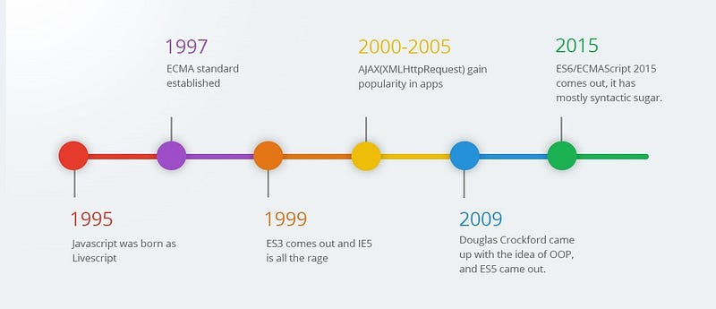
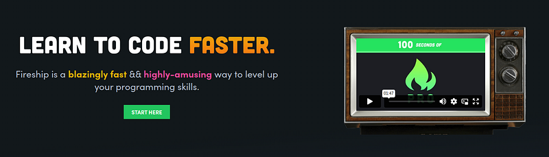
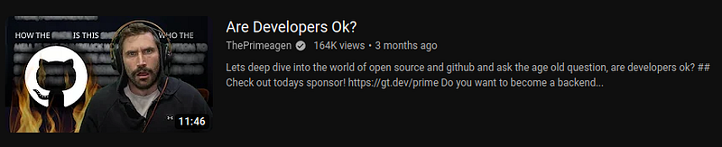
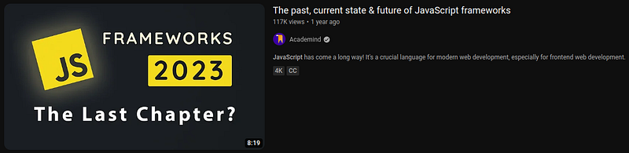
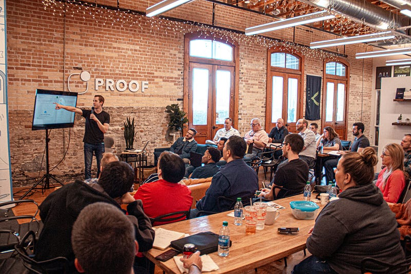
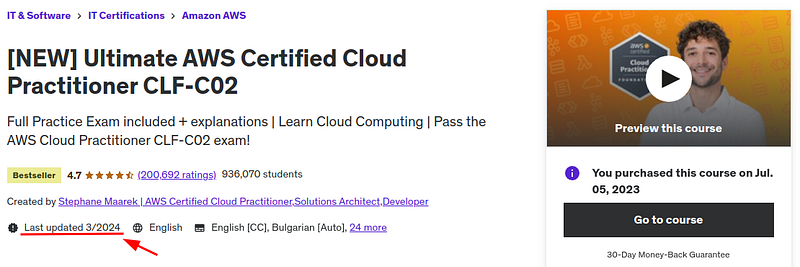
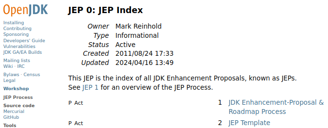

In job interviews, the interviewer may ask "how do you keep up with latest technologies and trends"?
I have seen this question on many written and verbal interviews. It is important.
I always hear about that one coworker who is on Java 8 and below. Or Javascript 5.1. That is who they are trying to filter out. This type of developer uses ancient syntax and functions and haven't updated their compiler in years.
Companies want more than that. They want the latest tech with optimal performance. And we should aspire for it. We should aspire to know the latest version of Java, Javascript, Python etc. and use it well.
For many of us advanced programmers updating technologies gives a sense of dread. It is like we are giving up on the many years we spent learning the older frameworks. We worked so hard to accomplish our skill with Java 8, we fear 11 then 17 and 21.
But remember, those skills will be used in new technology. You are growing in wisdom and understanding. They are transferable.
We have to be the type of developer that studies technology as it comes, striving to be our best in it today.
Why you should study programming history
For me, perhaps the most interesting topic of study is the history of my favorite languages and frameworks.
I thoroughly enjoy reading about how Javascript started and progressed to today. I like to review the timelines of different technologies.
OpenGL for example has many phases in its development from a simple pixel editing framework to a fully math based graphics API.
You find performance and ease of use has changed drastically every 5 years. I yearn for the fixed-function era. For myself I would have had fun living and learning OpenGL when it was fixed-function. Everything was just so exciting. I still feel a lot of FOMO for starting programming after 2016.
Many programmers out there feel the same about different parts of history. To be fair, I don't know how other programmers study history. I just know how I do it.
But, somehow they know it. Several programmer friends of mine look at timelines and ask questions as to how tech came to be.
We have interesting conversations about past and present development. Everyone in the group somehow knows the history.
LLMs to get timelines
I find myself searching through my LLM about history. I ask the model all about how a language started, where its headed and what the latest features are.
Usually I get a timeline of all updates to a language by year. This is where the gold is.
If we can see how a technology has progressed we are encouraged to try the new features. This is why we learn history, to look forward to the future.
I encourage you to become a history buff when it comes to Computer Science. It makes for great conversation and encourages you to always learn new updates.
YouTube channels for latest news
On top of learning history, a fun way to keep up with the latest news is programming entertainment. There are two YouTubers that are absolutely hilarious to watch and also keep you up to date.
They are Fireship & The Primeagen.
Both of these guys are constantly pumping out massive amounts of YouTube content talking about the latest trends.
Fireship in particular makes his whole brand keeping up with tech.
Fireship
Even down a few years back his videos are still relevant. If you have not seen him before I recommend watching all his videos from back a few years.
The channel is good for a binge to get a sense of history and just plain out laugh.
Many developers, including myself watch his videos just as they come out and speak of the new technologies in their various Discord communities.
All these voice chat communities are all talking about the same videos, each thinking their community is fire. When in reality it is just one community of many distributing the YouTube content.
The Primeagen incurs the same effect with his videos.
Primeagen
A few months ago The Primeagen released a review of a CloudFlare firing video. In several Discord communities I joined, they were talking about this review by the Primeagen.
We all had a comment about the layoffs and job marketplace. This is how modern news content gets distributed.
Primeagen gives very fine detail to software engineering as employment, industry trends and new updates.
His content is longform, lasting hours at a time. Though entertaining, I would only watch him if you thoroughly love his videos.
I find myself sitting and watching him for hours in consumption. Yes I had fun and learned a lot about programming. But, it may have been better to code those 2 hours instead.
But if you like him that much, more power to you.
Search your technology
Various YouTubers make feature lists about Python, Java, Rust and all languages.
It is not their specialty like Fireship or Primeagen. But, the videos are good none the less.
"Latest Javascript updates" is a good query, "Java 21 features" is a good query. Videos like these will pop up:
These are great to watch and search often about all your favorite technologies.
I have done that every other week or so and watched latest updates on all my favorite tech.
Yes its high effort, searching for the best videos. But hey we have no choice. We have to keep up somehow.
Meetups
Meetups do take a lot of time out of your day. But, when I go to a good, intense Meetup, I come out impassioned, with clarity and a new mindset for change.
Developers who gather there tend to be the technophile types just yearning to bust out all that information they gathered at home.
You want to hear them. I want to hear them. Their technophilia is contagious. Sorry I said it that way but its true.
I went to a Python Meetup for months down the street from my apartment. They had food and a presentation every meeting from various software engineers talking about the latest features of Python, Docker, Kubernetes, web development, WebGL. I went weekly.
And, what is insane, that is normal. That was my first Meetup group. It was both invigorating and educational. Since then I joined a variety of Meetup groups, depending on the technology I was using.
A good 30-40% of Meetups I searched through (the best ones) had developers with that zest for programming.
Later on I joined a graphics programming Meetup. I swear it was like going to a deep college class on graphics programming every time. Everyone was deeply involved with Vulkan, DirectX, WebGL and OpenGL.
If I had been a graphics programmer that Meetup would be gold. These Meetups tend to keep up with latest trends and will keep you informed on your technology if you find a good one.
Just be sure to find one relevant to you.
New Udemy courses
Brand new Udemy courses can come with the best lectures on an update.
Academind is dead set on quickly creating a fantastic React 19 course when it comes out. Tim Buchalka is cooking up a Java 21 complete course as we speak. Stephane Maarek is always cooking latest AWS. Jose Portilla is cooking something up as well for Python.
And mwah! These are the best instructors I have seen on Udemy. And they are hungry for your money.
Sad but true. $15 gets you amazing courses on the latest technologies out there.
If you are dead set on learning tech fast and keeping up with everyone then a good $15 investment is a good idea.
I have bought a good dozen Udemy courses which its instructors update often.
Instructors do tend to stuff the latest updates in old courses. So if you buy a course typically they switch from "Java 17 masterclass" to "Java 21 masterclass" at no cost to you.
Not bad.
Keeping up with proposals
Proposals are the official news articles technology groups broadcast to developers. All these YouTubers and teaching specialists get their information from these proposals.
They are documents which detail the latest updates. Here are the names of them for the various languages...
Python: Python Enhancement Proposals (PEPs)
Javascript: ECMAScript proposals
Java: Java Enhancement Proposals (JEPs)
Rust: Request For Comments (RFCs)
C++: C++ Standard Proposals
Etc...
Each of these are announced by their official website like python.org, oracle.com, and many others. Some languages have their proposals distributed by proxy sites as well like MDN Docs for Javascript.
Developer influencers read these, try out the new features then push out a video about it. Tedious, but that is the true way to learn updates as they come out.
We are fortunate for the assembly line of influencers who will do it for us. We just read their blogs and watch their videos.
Anywho, I hope you learned something...
CTA: Check out my book on learning code
Happy coding!